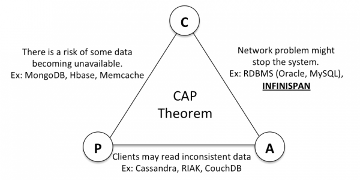
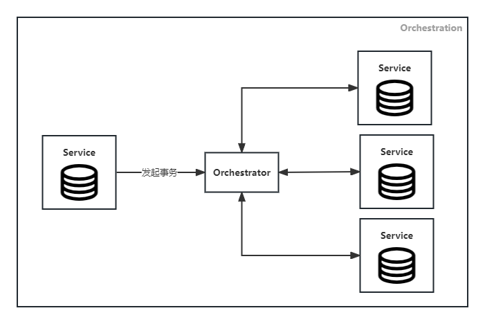

概述
分布式事务可以简单地分解为两部分：“分布式”与“事务”，即一种分布式系统中横跨多个服务的事务。相比传统的数据库本地事务，分布式事务受限于CAP定理，往往是一种“阉割”版的事务，因而难以满足传统事务4大特性ACID(Atomicity, Consistency, Isolation, Durability)的全部要求。 而处理分布式事务的处理方案多种多样，也各有利弊，下面将对常见几种方案进行逐一阐述。
在阐述处理方案前，先简单介绍一下CAP定理，这对理解各个方案会有一定帮助。
CAP是Consistency（一致性）、Availability（可用性）、Partition tolerance（分区容错性） 三个单词的首字母缩写。该定理的核心要义是：在分布式系统中，可用性、一致性、分区容错性三者只能取其二，如下图所示：

两阶段提交（2PC, Two-Phase Commit）
两阶段提交是指在网络以及数据库领域内，为了使基于分布式系统架构下的所有节点在进行事务提交时保持一致性而设计的一种演算法。通常，两阶段提交也被称为是一种协议。涉及两个阶段以及两种角色，如下表格所示：
| 协调者（Coordinator） | 参与者（Participant） |
|---|
1. 准备阶段
（也叫投票阶段） | 向所有参与者节点询问是否可以执行提交操作，并开始等待各参与者节点的响应 | 执行询问发起为止的所有事务操作，将Undo信息和Redo信息写入日志，并响应协调者节点发起的询问，反馈“完成”或“终止” |
| 2.0. 提交阶段 | 判断参与者节点是否均反馈“完成”。若均“完成”，则表示成功，进而执行提交，否则回滚 | |
| 2.1. 提交阶段[成功] | 向所有参与者节点发出”正式提交”的请求。当收到所有参与者节点反馈的”完成”消息后，完成事务 | 正式完成操作，释放在整个事务期间内占用的资源，并向协调者节点发送”完成”消息 |
| 2.2. 提交阶段[失败] | 向所有参与者节点发出”回滚操作”的请求。当收到所有参与者节点反馈的”回滚完成”消息后，取消事务 | 利用之前写入的Undo信息执行回滚，并释放在整个事务期间内占用的资源，并向协调者节点发送”回滚完成”消息 |
XA分布式事务协议
XA协议是由X/Open组织提出的分布式事务处理规范，实现了两阶段提交，被众多数据库厂商所支持。
XA协议定义了以下3种角色：
- 应用程序（Application Program，简称AP）：定义事务边界(即事务的开始和结束)，并且在事务边界内对资源进行操作；
- 事务管理器（Transaction Manager，简称TM）：负责分配事务唯一标识并监控事务的执行进度、事务的提交或回滚，扮演协调者角色；
- 资源管理器（Resource Manager，简称RM）：提供事务分支的注册、资源的访问以及事务分支的提交等，扮演参与者角色。
上述角色在这两个阶段的交互关系如下图所示，其中步骤2~5属于第一阶段，而步骤6/7属于第二阶段。
XA分布式事务演示
基于H2以及Groovy4的XA演示Groovy Web Console@Grapes(
@Grab(group='com.h2database', module='h2', version='2.1.214')
)
import javax.naming.InitialContext
import javax.sql.XAConnection
import javax.sql.XADataSource
import javax.transaction.xa.XAException
import javax.transaction.xa.XAResource
import javax.transaction.xa.Xid
import java.sql.Connection
import java.sql.DriverManager
import java.sql.Statement
import org.h2.jdbcx.JdbcDataSource
XADataSource xaDS1 = new JdbcDataSource(url: 'jdbc:h2:mem:db1', user: 'sunlan', password: '123456')
XAConnection xaConn1 = xaDS1.getXAConnection()
Connection conn1 = xaConn1.getConnection()
XAResource rm1 = xaConn1.getXAResource()
try (Statement ddlStmt1 = conn1.createStatement()) {
ddlStmt1.execute("CREATE TABLE IF NOT EXISTS MSG(CONT VARCHAR(64))")
ddlStmt1.execute("TRUNCATE TABLE MSG")
}
XADataSource xaDS2 = new JdbcDataSource(url: 'jdbc:h2:mem:db2', user: 'daniel', password: '123456')
XAConnection xaConn2 = xaDS2.getXAConnection()
Connection conn2 = xaConn2.getConnection()
XAResource rm2 = xaConn2.getXAResource()
try (Statement ddlStmt2 = conn2.createStatement()) {
ddlStmt2.execute("CREATE TABLE IF NOT EXISTS MSG(CONT VARCHAR(64))")
ddlStmt2.execute("TRUNCATE TABLE MSG")
}
byte[] genId() {
return UUID.randomUUID().toString().getBytes('UTF-8')
}
record SimpleXid(byte[] globalTransactionId, byte[] branchQualifier, int formatId) implements Xid {
@Override
byte[] getGlobalTransactionId() {
return globalTransactionId
}
@Override
byte[] getBranchQualifier() {
return branchQualifier
}
@Override
int getFormatId() {
return formatId
}
}
final byte[] gtrid = genId()
int formatId = 1
Xid xid1 = new SimpleXid(gtrid, genId(), formatId)
rm1.start(xid1, XAResource.TMNOFLAGS)
try (Statement stmt1 = conn1.createStatement()) {
stmt1.execute("INSERT INTO MSG(CONT) VALUES ('hello')")
}
rm1.end(xid1, XAResource.TMSUCCESS)
Xid xid2 = new SimpleXid(gtrid, genId(), formatId)
rm2.start(xid2, XAResource.TMNOFLAGS)
try (Statement stmt2 = conn2.createStatement()) {
stmt2.execute("INSERT INTO MSG(CONT) VALUES ('hi')")
}
rm2.end(xid2, XAResource.TMSUCCESS)
try {
int rc1 = rm1.prepare(xid1)
int rc2 = rm2.prepare(xid2)
if (XAResource.XA_OK == rc1 && XAResource.XA_OK == rc2) {
rm1.commit(xid1, false)
rm2.commit(xid2, false)
} else if (XAResource.XA_RDONLY == rc1 && XAResource.XA_OK == rc2) {
rm2.commit(xid2, true)
} else if (XAResource.XA_OK == rc1 && XAResource.XA_RDONLY == rc2) {
rm1.commit(xid1, true)
}
} catch (XAException xae) {
println "分布式事务prepare或commit失败（[${xae.errorCode}] ${xae.getMessage()}），执行回滚"
try {
rm1.rollback(xid1)
} catch (XAException xae1) {
println "事务分支1回滚失败（[${xae1.errorCode}] ${xae1.getMessage()}）"
}
try {
rm2.rollback(xid2)
} catch (XAException xae2) {
println "事务分支2回滚失败（[${xae2.errorCode}] ${xae2.getMessage()}）"
}
}
try(conn1; def stmt1 = conn1.createStatement();
def rs = stmt1.executeQuery('SELECT CONT FROM MSG')) {
def resultList = []
while (rs.next()) {
resultList << rs.getString('CONT')
}
assert ['hello'] == resultList
}
xaConn1.close()
try(conn2; def stmt2 = conn2.createStatement();
def rs = stmt2.executeQuery('SELECT CONT FROM MSG')) {
def resultList = []
while (rs.next()) {
resultList << rs.getString('CONT')
}
assert ['hi'] == resultList
}
xaConn2.close()
println 'Done.'
|
优缺点
三阶段提交（3PC, Three-Phase Commit）
三阶段提交，是在网络及数据库的范畴下，令一个分布式系统内的所有节点能够执行事务的提交的一种分布式算法，主要是为了解决两阶段提交协议的缺点。与两阶段提交不同的是，三阶段提交是一种“非阻塞”的协议。三阶段提交在两阶段提交的第一阶段与第二阶段之间插入了一个PreCommit阶段，令原先在两阶段提交中，参与者在投票之后，由于协调者发生崩溃或错误，而导致参与者处于无法知晓是否提交或者中止的“不确定状态”所产生的可能相当长的延时问题得以解决。但鱼与熊掌不可兼得，三阶段提交需要更多的通讯次数，延迟较高，实现也较为复杂，而且在网络分区的情况下依然会出现数据不一致问题，因此三阶段提交的实际应用相对比较少。
与两阶段提交的差异
| 两阶段提交 | 三阶段提交 |
|---|
| 阶段划分 | ㊀ 准备阶段
㊁ 提交阶段 | ① CanCommit对应2PC.㊀准备阶段
② PreCommit对应2PC.㊀准备阶段（新增的阶段，推迟提交以确定所有参与者均知道提交的这一决定）
③ DoCommit对应2PC.㊁提交阶段（若参与者接收来自协调者的消息超时，则默认执行提交） |
| 超时机制 | 只有协调者具有超时机制，而参与者则不具有超时机制 | 协调者和参与者都具有超时机制 |
| 同步阻塞 | 若参与者未及时收到协调者的消息，则一直持有事务资源并处于阻塞状态 | 若参与者未及时收到协调者的消息，一旦超时，则默认执行提交。虽然不阻塞，但可能会引发数据一致性问题 |
| 单点故障 | 协调者存在单点故障的可能，且会导致参与者长时间的同步阻塞 | 协调者存在单点故障的可能，但参与者的超时机制可以减少因该单点故障而导致的同步阻塞 |
优缺点
TCC（Try-Confirm/Cancel）
TCC取自Try、Confirm以及Cancel的首字母，是一种在应用层上实现的“两阶段提交”，因而对业务有一定的侵入性。此外，不同于传统的两阶段提交对数据库事务的依赖，TCC的资源锁定、提交以及回滚均需自行实现，所以事务参与者需要实现Try、Confirm以及Cancel接口，且均需实现幂等以避免重复执行产生错误。
| 应用层2PC | TCC | 协调者（Coordinator） | 参与者（Participant） |
|---|
| 1. 准备阶段 | Try阶段 | 调用所有参与者的Try接口 | 执行Try具体逻辑：业务检查（一致性），锁定资源（准隔离性） |
| 2.0. 提交阶段 | | 判断所有的Try接口调用结果。
若所有调用结果均为成功，则进入Confirm阶段，否则进入Cancel阶段 | |
| 2.1. 提交阶段[成功] | Confirm阶段 | 调用所有参与者的Confirm接口 | 执行Confirm具体逻辑：执行业务逻辑（不做业务检查且只使用Try阶段锁定的资源） |
| 2.2. 提交阶段[失败] | Cancel阶段 | 调用所有参与者的Cancel接口 | 执行Cancel具体逻辑：释放Try阶段锁定的资源 |
TCC的异常场景
幂等问题
分布式系统中，网络异常不可避免，所以需要通过重试来完成接口调用。若Try、Confirm以及Cancel接口不支持幂等，则会造成资源的重复锁定、使用以及释放，进而引发严重的业务问题。
空回滚
参与者的Try接口响应由于网络异常使得协调者成功接收到，因而协调者发出Cancel命令进行回滚。如果此时参与者的Try接口尚未执行，却收到了Cancel接口调用请求，则导致空回滚。
资源悬挂
在上述“空回滚”问题的基础上，若参与者的Try接口最终成功执行了，由于晚于Cancel接口的执行，那么就会导致Try接口锁定的资源迟迟不释放，便导致了资源悬挂问题。
解决上述3个问题的方案比较简单，参与者通过事务状态跟踪表来实现一个状态机，若接口调用不符合状态机的入口状态要求，表示请求非法，则拒绝执行。
优缺点
Saga
Saga是一些可交错运行的子事务集合，而这些子事务分解自一个长事务，其中的每个子事务都是一个保持数据库一致性的真实事务，并且都有对应的补偿动作以撤销子事务造成的结果。相较于TCC，免去了资源锁定阶段而直接执行子事务，若执行失败则进行恢复，从这个角度看，可以粗犷地这么理解：”Saga = TCC - T”。另外，同TCC一样，子事务的执行操作以及恢复操作也都应支持幂等。
协调模式
Saga执行事务的顺序称为Saga的协调逻辑，共有以下2种模式
Choreography
Saga参与者之间通过消息机制，订阅彼此事件以触发相应的事务操作。由于没有协调者，参与者之间需自行相互协调。该模式适用于参与者较少且无需复杂协调逻辑的场景。
Orchestration
定义一个协调者，负责参与者之间的协调工作。事务执行的命令从协调者发起，按照事务的逻辑顺序请求参与者，并接收到参与者的反馈后，协调者再向其他参与者发起调用请求。该模式适用于涉及协调逻辑较为复杂、参与者随时间推移不断添加的场景。

恢复策略
共有以下2种恢复策略，一种是迎难而上，而另外一种则是“打退堂鼓”。
向前恢复（Forward Recovery）
若子事务执行失败，则尝试重试，以积极主动的心态去推进分布式事务的执行。
以下图为例，当子事务T3执行失败时，T3尝试重试，成功后继续执行后续的子事务T4、T5：
向后恢复（Backward Recovery）
若子事务执行失败，则尝试撤销，针对已执行完成的子事务，按照由近及远的顺序逐一撤销，以消除部分已执行的子事务所造成的影响。
以下图为例，当子事务T3执行失败时，依次撤销T3、T2、T1子事务所做的操作：
优缺点
参考资料